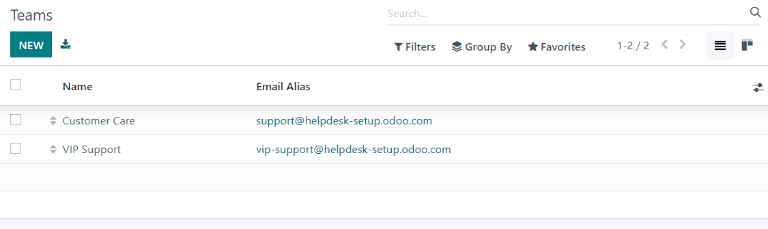
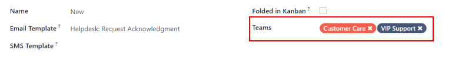

Primeros pasos con Servicio de asistencia¶
Servicio de asistencia de Odoo es una aplicación de soporte al cliente que utiliza tickets. Los equipos pueden rastrear, priorizar y resolver los problemas de los clientes desde su flujo, el cual se organiza en etapas personalizables. Se pueden configurar y administrar varios equipos en un tablero.
Crear equipos del Servicio de asistencia¶
Configurar varios equipos le permite agrupar los tickets por ubicación o por tipo de soporte.
Para ver o modificar los equipos del Servicio de asistencia, vaya a . Para crear un nuevo equipo, haga clic en el botón Nuevo en la parte superior izquierda del tablero. Allí, escriba un nombre para el nuevo equipo y complete los campos restantes definidos en las siguientes secciones del formulario.
Asignación y visibilidad¶
Determinar para quién será visible el equipo¶
En la sección Visibilidad, determine quién puede ver este equipo y sus tickets.
Los usuarios internos invitados tienen acceso al equipo y los tickets que están siguiendo. Esto se puede modificar en cada ticket individual.
Todos los usuarios internos tienen acceso al equipo y a todos sus tickets sin ser seguidores.
Los usuarios invitados del portal y todos los usuarios internos tienen acceso al equipo sin ser seguidores. Los usuarios del portal solo podrán acceder a los tickets que estén siguiendo.
Example
Un equipo de atención al cliente que gestiona problemas con respecto a envíos y productos debería tener el ajuste de visibilidad para usuarios del portal invitados y todos los usuarios internos. Sin embargo, un equipo de servicios financieros que gestione tickets relacionados con información contable o fiscal solo debería ser visible para usuarios internos invitados.
Asignar nuevos tickets de forma automática¶
Al recibir los tickets, deberán asignarse a un miembro del equipo de soporte. Esto se puede hacer de forma manual en cada ticket o con asignación automática. Marque la casilla junto a Asignación automática para habilitar la función para este equipo.

Seleccione uno de los siguientes métodos de asignación según la manera en que se debe asignar la carga de trabajo para todo el equipo:
- A cada usuario se le asigna el mismo número de tickets asigna tickets a los miembros del equipo
según el número total de tickets, sin importar el número de tickets abiertos o cerrados que estén asignados actualmente.
- Cada usuario tiene el mismo número de tickets abiertos asignados a los miembros del equipo
según la cantidad de tickets abiertos que estén asignados actualmente. Esta opción es útil para delegar en automático una carga de trabajo más pesada a las personas con mejor desempeño que suelen cerrar tickets con rapidez.
Por último, agregue a los miembros del equipo a los que se les asignarán tickets. Deje el campo vacío para incluir a todos los empleados que tengan las asignaciones adecuadas y los permisos de acceso configurados en los ajustes de su cuenta de usuario.
Nota
Si un empleado tiene un permiso programado en la aplicación Tiempo personal, entonces no se le asignarán tickets durante ese tiempo. Si no hay empleados disponibles, el sistema buscará hasta que haya una coincidencia.
Ver también
Crear o modificar etapas de kanban¶
Las etapas se utilizan para organizar el flujo del Servicio de asistencia y llevar seguimiento del progreso de los tickets. Las etapas son personalizables y puede modificar sus nombres para que se adapten a las necesidades de cada equipo.
Para ver o modificar etapas del Servicio de asistencia, vaya a .
Importante
Debe habilitar el modo de desarrollador para acceder al menú de etapas. Para activar el modo de desarrollador vaya a y haga clic en Activar modo de desarrollador.
La vista de lista muestra información general de todas las etapas disponibles en Servicio de asistencia y se enumeran en el mismo orden en que aparecen en el flujo. Para cambiar el orden de las etapas, utilice los botones de flecha en el lado izquierdo de la lista.
Truco
Para cambiar el orden de las etapas en la vista de kanban, solo arrastre y suelte las columnas individuales.

Para crear una nueva etapa, haga clic en el botón Nuevo en la parte superior izquierda del tablero. Después, elija un nombre para la nueva etapa y agregue una descripción (esta no es obligatoria). Para completar los campos restantes siga los siguientes pasos.

Agregar plantillas de correo electrónico y SMS a las etapas¶
Si agrega una plantilla de correo electrónico a una etapa, el cliente recibirá un correo electrónico cuando un ticket llegue a esa etapa en específico en el flujo del servicio de asistencia. Del mismo modo, si agrega una plantilla SMS, el cliente recibirá un mensaje de texto SMS.
Importante
El servicio de mensajería de texto SMS necesita créditos prepagados de compra dentro de la aplicación para funcionar. Consulte las preguntas frecuentes sobre SMS para obtener más información.
Para elegir una plantilla de correo electrónico existente, selecciónela en el campo Plantilla de correo electrónico. Haga clic en la tecla de flecha a la derecha del campo para editar la plantilla.
Para crear una nueva plantilla, haga clic en el campo y comience a escribir un nuevo título de plantilla. Luego, seleccione Crear y editar y complete los detalles del formulario.
Siga los mismos pasos para seleccionar, editar o crear una plantilla SMS.

Ver también
Asignar etapas a un equipo¶
Elija un equipo en el campo correspondiente en el formulario de etapas. Puede seleccionar más de un equipo, ya que puede asignar las mismas etapas a varios equipos.

Plegar una etapa¶
Marque la casilla plegado en kanban en el formulario de etapas para visualizar esta etapa como plegada de forma predeterminada en la vista de kanban de este equipo.
Advertencia
Los tickets que llegan a una etapa plegada se consideran cerrados. Cerrar un ticket antes de completar el trabajo puede resultar en problemas de reportes y comunicación. Este ajuste solo se debe habilitar para etapas que se consideran de cierre
También puede plegar etapas de forma temporal en la vista de kanban, haga clic en el icono de ajustes y seleccione plegar.
Nota
Plegar manualmente una etapa en la vista de kanban no cerrará los tickets de dicha etapa.